What Cytokines Do — Differentiation, Survival, Deathکار سایتوکاینها — تمایز، بقا، مرگ
Part 4 was the grammar; this is the vocabulary in use. Cytokines decide what a lymphocyte becomes, which antibody class it makes, where lymphoid tissue is built, how long the cell lives and when it dies. Five jobs, and the last two are the ones people forget: a cytokine that kills is still a cytokine.بخش ۴ دستور زبان بود؛ این واژگان در عمل است. سایتوکاینها تعیین میکنند لنفوسیت چه میشود، کدام کلاس آنتیبادی را میسازد، بافت لنفاوی کجا ساخته میشود، سلول چقدر زنده میماند و کی میمیرد. پنج کار، و دو تای آخر همانهاییاند که فراموش میشوند: سایتوکاینی که میکشد هم سایتوکاین است.
By the end of this Part you should be able toدر پایان این بخش باید بتوانید
For each helper T subset, give the driving cytokine, the master transcription factor and the effector cytokines.برای هر زیرگروه T کمکی، سایتوکاین محرک، عامل رونویسی اصلی و سایتوکاینهای اجرایی را بگویید.
Say which cytokine drives which antibody class, and why that matters in allergy.بگویید کدام سایتوکاین کدام کلاس آنتیبادی را میراند و چرا این در آلرژی اهمیت دارد.
Distinguish IL-2 from IL-7 by when in a response each is needed.IL-2 را از IL-7 بر پایهٔ اینکه هر یک در چه زمانی از پاسخ لازم است تمیز دهید.
Explain why a Fas mutation causes lymphadenopathy and autoimmunity rather than immunodeficiency.توضیح دهید چرا جهش Fas بهجای نقص ایمنی، لنفادنوپاتی و خودایمنی میسازد.
5.1Steering T-Cell Differentiationهدایت تمایز سلول T
This is signal 3 from Part 2, in detail. A naïve CD4 T cell is a blank. What it becomes is decided by which cytokine is in the room at the moment it is activated — and that cytokine came from the innate immune cell that judged the threat. Each subset follows the same three-step recipe: a driving cytokine → a master transcription factor → a set of effector cytokines.این همان سیگنال ۳ بخش ۲ است، با جزئیات. سلول TCD4 ساده، سفید است. اینکه چه میشود را سایتوکاینی تعیین میکند که در لحظهٔ فعالشدنش در اتاق است — و آن سایتوکاین از سلول ایمنی ذاتیای آمده که تهدید را سنجیده. هر زیرگروه از یک دستور سهگامی پیروی میکند: یک سایتوکاین محرک ← یک عامل رونویسی اصلی ← مجموعهای از سایتوکاینهای اجرایی.
Table 5.1 The helper T subsets — the table to know coldجدول ۵.۱ — زیرگروههای T کمکی — جدولی که باید بیدرنگ بدانید
Subsetزیرگروه
Driven by S3راندهشده با
Master TFعامل رونویسی
Makesمیسازد
Job — and the disease of too muchکار — و بیماریِ زیادیاش
Th1
IL-12 (+ IFN-γ, IL-18)IL-12 (+ IFN-γ، IL-18)
T-bet via STAT4T-bet از راه STAT4
IFN-γ, IL-2, TNF-β (LT-α)IFN-γ، IL-2، TNF-β
Intracellular pathogens — activates macrophages to kill what they have swallowed. Excess → organ-specific autoimmunity, granulomaپاتوژنهای درونسلولی — ماکروفاژ را فعال میکند تا آنچه بلعیده را بکشد. زیادی ← خودایمنی اختصاصی اندام، گرانولوم
Th2
IL-4IL-4
GATA-3 via STAT6GATA-3 از راه STAT6
IL-4, IL-5, IL-13, IL-10IL-4، IL-5، IL-13، IL-10
Helminths — eosinophils, mast cells, IgE. Excess → allergy and asthmaکرمها — ائوزینوفیل، ماستسل، IgE. زیادی ← آلرژی و آسم
Th9
IL-4 + TGF-βIL-4 + TGF-β
PU.1
IL-9
Mucus production, tissue inflammation; contributes to allergic airway diseaseتولید موکوس، التهاب بافتی؛ در بیماری آلرژیک راه هوایی نقش دارد
Extracellular bacteria and fungi — recruits neutrophils. Excess → psoriasis, ankylosing spondylitis, IBDباکتریها و قارچهای خارجسلولی — نوتروفیل فرا میخواند. زیادی ← پسوریازیس، اسپوندیلیت آنکیلوزان، بیماری التهابی روده
Th22
TNF-α, IL-6TNF-α، IL-6
AHR
IL-22
Tissue inflammation and epithelial barrier repair; implicated in psoriasis and atopic dermatitisالتهاب بافتی و ترمیم سد اپیتلیال؛ در پسوریازیس و درماتیت آتوپیک دخیل است
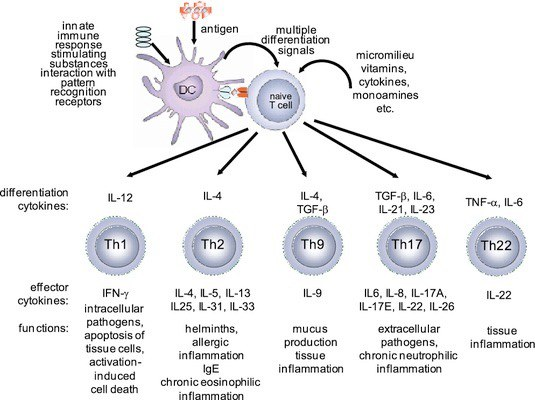
Fig 5.1 The lecturer's diagram, and it is laid out exactly as Table 5.1. A dendritic cell presents antigen to a naïve T cell; the differentiation cytokines across the top decide the lineage; the effector cytokines below each cell are what it then makes; the functions along the bottom are the jobs. Read down a column and you have one subset; read across a row and you have one kind of fact.نمودار مدرّس، و دقیقاً مانند جدول ۵.۱ چیده شده. سلول دندریتیک آنتیژن را به سلول T ساده عرضه میکند؛ سایتوکاینهای تمایزی در بالا رده را تعیین میکنند؛ سایتوکاینهای اجرایی زیر هر سلول همانهاییاند که بعد میسازد؛ عملکردها در پایین، کارها هستند. یک ستون را عمودی بخوانید، یک زیرگروه دارید؛ یک ردیف را عرضی بخوانید، یک نوع واقعیت دارید.
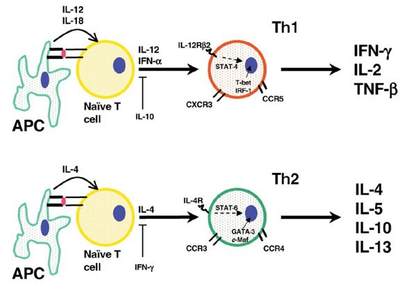
Fig 5.2 The two classic arms in full. Top: IL-12 and IL-18 from the APC → STAT4 → T-bet → a Th1 cell making IFN-γ, IL-2 and TNF-β, and expressing the chemokine receptors CXCR3 and CCR5. Bottom: IL-4 → STAT6 → GATA-3 and c-Maf → a Th2 cell making IL-4, IL-5, IL-10 and IL-13, expressing CCR3 and CCR4. Note the cross-arrows: IL-10 suppresses the Th1 arm and IFN-γ suppresses the Th2 arm.دو بازوی کلاسیک بهتمامی. بالا:IL-12 و IL-18 از سلول عرضهکننده ← STAT4 ← T-bet ← سلول Th1 که IFN-γ، IL-2 و TNF-β میسازد و گیرندههای کموکاینی CXCR3 و CCR5 را بیان میکند. پایین:IL-4 ← STAT6 ← GATA-3 و c-Maf ← سلول Th2 که IL-4، IL-5، IL-10 و IL-13 میسازد و CCR3 و CCR4 را بیان میکند. به پیکانهای متقاطع توجه کنید: IL-10 بازوی Th1 را و IFN-γ بازوی Th2 را سرکوب میکند.
Remember it asاینطور بهخاطر بسپارید
One-two, twelve-four.Th1 is driven by IL-12; Th2 is driven by IL-4. Then the transcription factors in alphabetical-ish order: T-bet for Th1, GATA-3 for Th2, RORγt for Th17. And the outputs: Th1 → IFN-γ (macrophages), Th2 → IL-4/5/13 (eosinophils and IgE), Th17 → IL-17 (neutrophils). Three subsets, three cell types recruited.یک-دو، دوازده-چهار.Th1 را IL-12 میراند؛ Th2 را IL-4. سپس عوامل رونویسی: T-bet برای Th1، GATA-3 برای Th2، RORγt برای Th17. و خروجیها: Th1 → IFN-γ (ماکروفاژ)، Th2 → IL-4/5/13 (ائوزینوفیل و IgE)، Th17 → IL-17 (نوتروفیل). سه زیرگروه، سه نوع سلولِ فراخواندهشده.
You learned in Session 2 that a B cell can change its heavy-chain constant region while keeping its specificity. What you were not told is who decides which class it switches to. The answer is the cytokine environment, and therefore the helper T subset of §5.1.در جلسهٔ ۲ آموختید که سلول B میتواند ناحیهٔ ثابت زنجیرهٔ سنگینش را عوض کند و اختصاصیتش را نگه دارد. آنچه گفته نشد این است که چه کسی تصمیم میگیرد به کدام کلاس تعویض شود. پاسخ، محیط سایتوکاینی است و بنابراین زیرگروه T کمکیِ بخش ۵.۱.
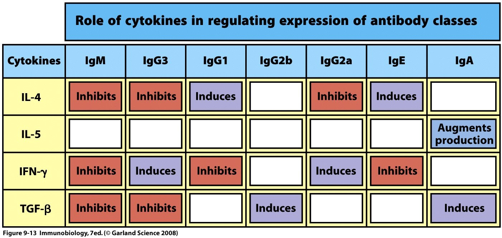
Fig 5.3 The lecturer's table. Read the rows, not the cells: IL-4 induces IgG1 and IgE while inhibiting IgM, IgG3 and IgG2a; IFN-γ does the mirror image, inducing IgG3 and IgG2a while inhibiting IgE; IL-5 augments IgA production; TGF-β induces IgG2b and IgA. The Th2 cytokine makes the allergy antibody and the Th1 cytokine blocks it — the antagonism of §4.2 written out in antibody classes.جدول مدرّس. ردیفها را بخوانید نه خانهها را: IL-4IgG1 و IgE را القا و IgM، IgG3 و IgG2a را مهار میکند؛ IFN-γ تصویر آینهایاش را میکند، IgG3 و IgG2a را القا و IgE را مهار میکند؛ IL-5 تولید IgA را تقویت میکند؛ TGF-βIgG2b و IgA را القا میکند. سایتوکاین Th2 آنتیبادی آلرژی را میسازد و سایتوکاین Th1 مسدودش میکند — همان آنتاگونیسم بخش ۴.۲ که به زبان کلاسهای آنتیبادی نوشته شده.
Exam Trap — IgG2a and IgG2b are mouse subclassesدام امتحانی — IgG2a و IgG2b زیرکلاسهای موشیاند
The table lists IgG1, IgG2a, IgG2b and IgG3. Those are the mouse IgG subclasses, because the switching experiments were done in mice. Human IgG subclasses are IgG1, IgG2, IgG3 and IgG4 — there is no human IgG2a. The biology transfers and is what you should carry away: IL-4 → IgE, TGF-β → IgA, IFN-γ → opsonising and complement-fixing IgG subclasses. The subclass numbers do not transfer. In a human question, the human answer is: IL-4 and IL-13 drive IgE; TGF-β and IL-5 drive IgA; IFN-γ drives IgG1 and IgG3.جدول IgG1، IgG2a، IgG2b و IgG3 را فهرست میکند. اینها زیرکلاسهای IgGموشاند، چون آزمایشهای تعویض در موش انجام شده. زیرکلاسهای IgG انسان IgG1 تا IgG4 هستند — IgG2aی انسانی وجود ندارد. زیستشناسی منتقل میشود و همان است که باید ببرید: IL-4 ← IgE، TGF-β ← IgA، IFN-γ ← زیرکلاسهای IgGی که اپسونیزه و کمپلمان تثبیت میکنند. شمارههای زیرکلاس منتقل نمیشوند. در پرسش انسانی، پاسخ انسانی این است: IL-4 و IL-13IgE را میرانند؛ TGF-β و IL-5IgA را؛ IFN-γIgG1 و IgG3 را.
Clinical Correlation — blocking the IL-4 pathway in atopic diseaseارتباط بالینی — مسدودکردن مسیر IL-4 در بیماری آتوپیک
If IL-4 and IL-13 drive IgE, then blocking them should collapse the allergic response. Dupilumab is a monoclonal antibody against IL-4Rα, the chain shared by the IL-4 and IL-13 receptors — a deliberate use of the shared-subunit principle from §4.4 to block two cytokines with one drug. It is now standard therapy for severe atopic dermatitis, asthma and chronic rhinosinusitis with nasal polyps. Read the name: -umab, fully human.اگر IL-4 و IL-13IgE را میرانند، مسدودکردنشان باید پاسخ آلرژیک را فرو بریزد. دوپیلوماب آنتیبادی مونوکلونالی است ضد IL-4Rα، زنجیرهٔ مشترک گیرندههای IL-4 و IL-13 — بهرهگیری عمدی از اصل زیرواحد مشترکِ بخش ۴.۴ برای مسدودکردن دو سایتوکاین با یک دارو. اکنون درمان استاندارد درماتیت آتوپیک شدید، آسم و رینوسینوزیت مزمن با پولیپ بینی است. نامش را بخوانید: -umab، کاملاً انسانی.
5.3Building the Secondary Lymphoid Organsساختن اندامهای لنفاوی ثانویه
Cytokines do not only run responses; they build the buildings the responses happen in. The TNF family members lymphotoxin (LT-α, LT-β) and TNF are required for the normal architecture of spleen, lymph nodes and Peyer's patches, and LT in particular is a strong inducer of the chemokines that sort T cells and B cells into their separate zones.سایتوکاینها تنها پاسخها را نمیگردانند؛ ساختمانهایی را میسازند که پاسخها در آن رخ میدهند. اعضای خانوادهٔ TNF یعنی لنفوتوکسین (LT-α، LT-β) و TNF برای معماری طبیعی طحال، غدد لنفاوی و پلاکهای پییر لازماند، و بهویژه LT القاکنندهٔ قویِ کموکاینهایی است که سلولهای T و B را به مناطق جداگانهشان مرتب میکند.
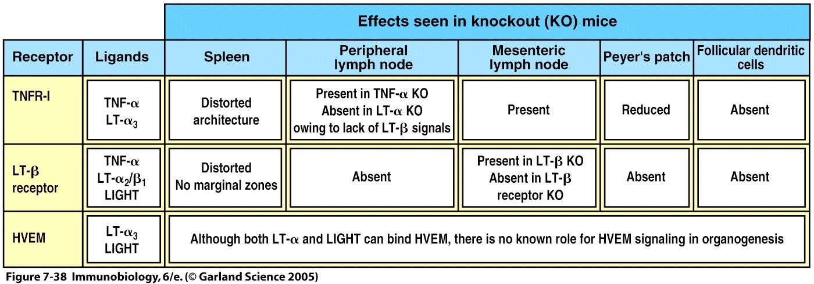
Fig 5.4 Knockout evidence. Deleting the TNF receptor distorts splenic architecture and abolishes follicular dendritic cells; deleting LT-β receptor signalling additionally abolishes peripheral and mesenteric lymph nodes and Peyer's patches. The animal has no lymph nodes at all. This is the strongest possible statement that a cytokine can be a developmental morphogen, not merely a messenger.شواهد حذف ژن. حذف گیرندهٔ TNF معماری طحال را مختل و سلولهای دندریتیک فولیکولی را حذف میکند؛ حذف پیامرسانی گیرندهٔ LT-β علاوه بر آن، غدد لنفاوی محیطی و مزانتریک و پلاکهای پییر را از میان میبرد. حیوان اصلاً غدهٔ لنفاوی ندارد. این قویترین بیان ممکن است از اینکه یک سایتوکاین میتواند مورفوژن تکاملی باشد، نه صرفاً پیامرسان.
5.4Survival and Clonal Expansionبقا و گسترش کلونال
An immune response has a shape: a small number of cells expand enormously, most of them then die, and a few remain as memory. Cytokines control all three phases — and the experiment that proves it is one of the cleanest in immunology.پاسخ ایمنی شکلی دارد: شمار اندکی سلول بهشدت گسترش مییابند، بیشترشان میمیرند و اندکی بهعنوان حافظه میمانند. سایتوکاینها هر سه مرحله را کنترل میکنند — و آزمایشی که ثابتش میکند از تمیزترینهای ایمونولوژی است.
Mechanism — the superantigen experiment and the “IL-2 pump”مکانیسم — آزمایش سوپرآنتیژن و «پمپ IL-2»
Inject a superantigen, which activates every T cell carrying a particular Vβ gene segment regardless of its actual specificity.This gives you a large, trackable population — you can count the Vβ-positive cells by flow cytometry day by day, which you could never do with a normal antigen-specific clone.یک سوپرآنتیژن تزریق کنید که هر سلول T دارای قطعهٔ ژنی Vβ معیّن را، صرفنظر از اختصاصیت واقعیاش، فعال میکند.این جمعیتی بزرگ و قابلردیابی به شما میدهد — میتوانید سلولهای Vβ مثبت را روزبهروز با فلوسایتومتری بشمارید، کاری که با یک کلون طبیعیِ اختصاصی هرگز نمیتوانستید.
Those T cells undergo an initial clonal expansion over two to three days.آن سلولهای T طی دو تا سه روز گسترش کلونال اولیه پیدا میکنند.
Expansion is followed by contraction: the population collapses back down.This is the default. The cells were kept alive by a growth factor, and when the antigen is cleared the growth factor stops.پس از گسترش، انقباض میآید: جمعیت فرو میریزد.این حالت پیشفرض است. سلولها را عامل رشدی زنده نگه میداشت و وقتی آنتیژن پاک شد، عامل رشد قطع میشود.
An “IL-2 pump” implanted in the animal rescues the contraction — the cells do not die.This is the decisive result. Adding back one cytokine prevents the death, which proves the death was caused by its absence, not by anything the antigen did. The deaths are therefore called passive cell death — death by neglect, or cytokine deprivation.یک «پمپ IL-2» کاشتهشده در حیوان، انقباض را نجات میدهد — سلولها نمیمیرند.این نتیجهٔ تعیینکننده است. بازگرداندن یک سایتوکاین جلوی مرگ را میگیرد و همین ثابت میکند مرگ از نبودِ آن بوده، نه از کاری که آنتیژن کرده. پس این مرگها را مرگ سلولی منفعل مینامند — مرگ از بیتوجهی، یا محرومیت از سایتوکاین.
Passive cell death is regulated by the Bcl-2 family — the intrinsic, mitochondrial apoptosis pathway.مرگ سلولی منفعل را خانوادهٔ Bcl-2 تنظیم میکند — مسیر آپوپتوز درونزاد و میتوکندریایی.
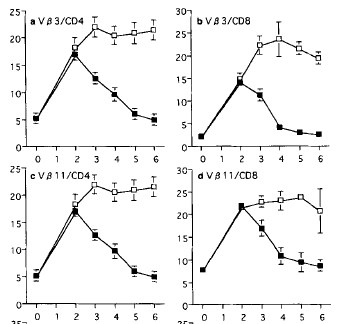
Fig 5.5 The data. Four panels — Vβ3 and Vβ11, CD4 and CD8. In each, the filled symbols fall away after day 2–3 (contraction) while the open symbols stay high: the open symbols are the animals given IL-2.دادهها. چهار پانل — Vβ3 و Vβ11، CD4 و CD8. در هر کدام، نمادهای توپر پس از روز ۲ تا ۳ افت میکنند (انقباض) در حالی که نمادهای توخالی بالا میمانند: نمادهای توخالی حیواناتیاند که IL-2 گرفتهاند.
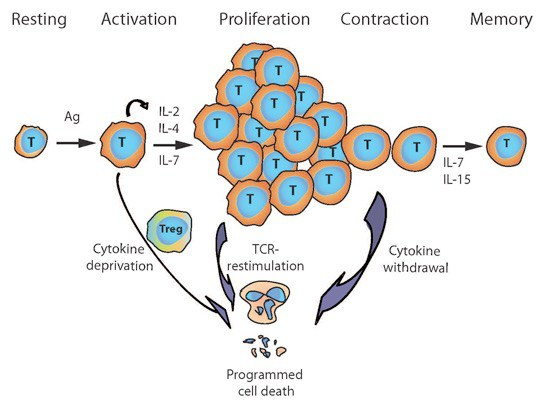
Fig 5.6 The five phases with their cytokines. Activation and proliferation: IL-2, IL-4, IL-7.Contraction: cytokine deprivation → programmed cell death, with a Treg helping to enforce it. Memory: IL-7 and IL-15, which keep the surviving cells alive for years without any antigen.پنج مرحله با سایتوکاینهایشان. فعالسازی و تکثیر: IL-2، IL-4، IL-7.انقباض: محرومیت از سایتوکاین ← مرگ برنامهریزیشدهٔ سلولی، که سلول T تنظیمی به اجرایش کمک میکند. حافظه: IL-7 و IL-15 که سلولهای بازمانده را سالها بدون هیچ آنتیژنی زنده نگه میدارند.
IL-2 versus IL-7 — the distinction the lecture draws in one lineIL-2 در برابر IL-7 — تمایزی که درس در یک خط میکشد
IL-7: survival during differentiation.IL-2: survival during proliferation. The experiment behind it: mice infected with LCMV generate a primary CD8 response in which some effector cells express high levels of IL-7R and others do not. Transfer only the IL-7Rhi cells into naïve mice and challenge, and you get robust expansion of antigen-specific CD8 cells; transfer the IL-7Rlo cells and you get almost nothing. IL-7R expression marks the cells that will become memory.IL-7: بقا در حین تمایز.IL-2: بقا در حین تکثیر. آزمایش پشتش: موشهای آلوده به LCMV پاسخ اولیهٔ CD8 میسازند که در آن برخی سلولهای اجرایی سطح بالایی از گیرندهٔ IL-7 بیان میکنند و برخی نه. تنها سلولهای IL-7R بالا را به موش ساده منتقل و چالش دهید، گسترش قدرتمند سلولهای CD8 اختصاصی میگیرید؛ سلولهای IL-7R پایین را منتقل کنید، تقریباً هیچ. بیان گیرندهٔ IL-7 نشانگر سلولهایی است که حافظه خواهند شد.
Two clinical consequences follow. IL-7Rα (CD127) deficiency causes a T⁻ B⁺ NK⁺ SCID — the T cells alone are missing, because only they depend absolutely on IL-7. And IL-7 is being trialled as an adjuvant to improve vaccine-induced memory, on exactly this reasoning.دو پیامد بالینی دارد. کمبود IL-7Rα (CD127) یک SCID با T منفی، B مثبت و NK مثبت میدهد — تنها سلولهای T غایباند، چون فقط آنها مطلقاً به IL-7 وابستهاند. و IL-7 بهعنوان ادجوانت برای بهبود حافظهٔ ناشی از واکسن، دقیقاً بر پایهٔ همین استدلال در حال آزمایش است.
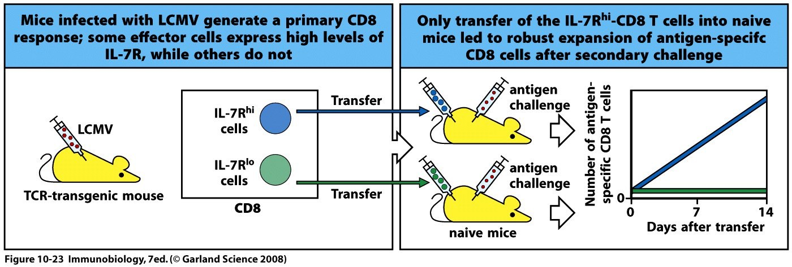
Fig 5.7 The transfer experiment. LCMV-infected TCR-transgenic mice make CD8 effectors, some IL-7Rhi (blue) and some IL-7Rlo (green). Transferred into naïve mice and challenged, only the IL-7Rhi cells expand — the blue line rises and the green line stays flat.آزمایش انتقال. موشهای تراژن TCR آلوده به LCMV، سلولهای اجرایی CD8 میسازند، برخی IL-7R بالا (آبی) و برخی IL-7R پایین (سبز). پس از انتقال به موش ساده و چالش، تنها سلولهای IL-7R بالا گسترش مییابند — خط آبی بالا میرود و خط سبز صاف میماند.
5.5Death Cytokines: Fas, TNF and TRAILسایتوکاینهای مرگ: Fas، TNF و TRAIL
Section 5.4 was death by neglect. This is death by instruction. A subgroup of the TNF superfamily exists to tell a cell to kill itself, and the lecture names three ligands: FasL, TNF and TRAIL (TNF-related apoptosis-inducing ligand).بخش ۵.۴ مرگ از بیتوجهی بود. این مرگ از دستور است. زیرگروهی از اَبَرخانوادهٔ TNF هست تا به سلول بگوید خودش را بکشد، و درس سه لیگاند را نام میبرد: FasL، TNF و TRAIL (لیگاند القاکنندهٔ آپوپتوز مرتبط با TNF).
Table 5.2 Two ways a lymphocyte diesجدول ۵.۲ — دو راهی که لنفوسیت میمیرد
Passive — death by neglectمنفعل — مرگ از بیتوجهی
Active — death by instructionفعال — مرگ از دستور
Triggerمحرک
Cytokine withdrawal when antigen is clearedقطع سایتوکاین وقتی آنتیژن پاک شد
FasL engaging Fas on a repeatedly restimulated T cellFasL که Fas را درگیر میکند روی سلول Tی که مکرراً دوباره تحریک شده
Pathwayمسیر
Intrinsic — mitochondrial, regulated by the Bcl-2 familyدرونزاد — میتوکندریایی، تنظیمشده با خانوادهٔ Bcl-2
Low antigen load — the ordinary end of a resolving responseبار آنتیژنی کم — پایان معمول پاسخی که فروکش میکند
High antigen load — persistent or repeated stimulationبار آنتیژنی زیاد — تحریک پایدار یا مکرر
Failure causesخرابیاش میسازد
Lymphocyte accumulationانباشت لنفوسیت
ALPS in humans; lpr and gld lupus-like disease in miceALPS در انسان؛ بیماری شبهلوپوس lpr و gld در موش
Absence proves function — ALPS, and the lpr and gld miceنبودش کارش را ثابت میکند — ALPS و موشهای lpr و gld
Mutations in Fas (the lpr mouse) or in Fas ligand (the gld mouse) cause the same lupus-like autoimmune disease — which tells you at once that the receptor and its ligand are in one pathway, because breaking either end gives the identical phenotype.جهش در Fas (موش lpr) یا در لیگاند Fas (موش gld) همان بیماری خودایمن شبهلوپوس را میسازد — و همین بیدرنگ میگوید گیرنده و لیگاندش در یک مسیرند، چون شکستن هر دو سر، فنوتیپ یکسان میدهد.
In humans the same defect is ALPS — autoimmune lymphoproliferative syndrome. The child in Fig 5.8 has the classic presentation: massive, chronic, non-malignant lymphadenopathy with splenomegaly, plus autoimmune cytopenias. The laboratory hallmark is an expanded population of double-negative T cells (CD3⁺ but CD4⁻CD8⁻) — cells that should have been deleted and were not.در انسان همین نقص، ALPS — سندرم لنفوپرولیفراتیو خودایمن است. کودک شکل ۵.۸ تظاهر کلاسیک را دارد: لنفادنوپاتی عظیم، مزمن و غیربدخیم با بزرگی طحال، بهعلاوهٔ سیتوپنیهای خودایمن. نشانهٔ آزمایشگاهی، جمعیت گسترشیافتهٔ سلولهای T دومنفی است (CD3 مثبت اما CD4 و CD8 منفی) — سلولهایی که باید حذف میشدند و نشدند.
Read what this proves. Losing a death pathway does not cause immunodeficiency — it causes too much immune system. Lymphocytes that cannot be deleted accumulate, and among them are the self-reactive ones that should have been removed. Autoimmunity here is a failure of subtraction, not of selection.ببینید این چه چیزی را ثابت میکند. ازدستدادن مسیر مرگ، نقص ایمنی نمیسازد — ایمنیِ زیادی میسازد. لنفوسیتهایی که نمیتوان حذفشان کرد انباشته میشوند، و میانشان همانهاییاند که خودواکنشگرند و باید برداشته میشدند. خودایمنی اینجا شکست تفریق است، نه شکست گزینش.
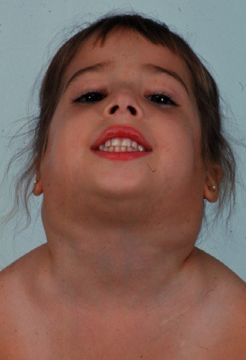
Fig 5.8 A patient with ALPS and a Fas mutation, showing gross cervical lymphadenopathy. Nothing here is malignant — these are normal lymphocytes that failed to die.بیماری با ALPS و جهش Fas با لنفادنوپاتی چشمگیر گردنی. هیچ چیزی اینجا بدخیم نیست — اینها لنفوسیتهای طبیعیاند که نمردند.
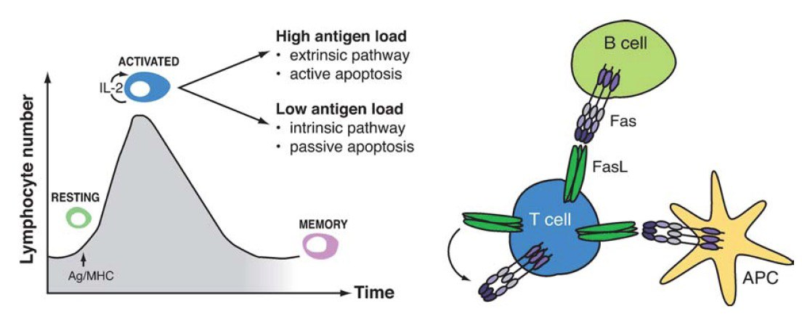
Fig 5.9 Left: the shape of a response — resting, activated, memory. Right: a T cell carrying FasL engaging Fas on a B cell, on another T cell or on an APC. High antigen load → extrinsic, active pathway. Low antigen load → intrinsic, passive apoptosis. Same endpoint, two routes chosen by how much antigen is left.چپ: شکل یک پاسخ — استراحت، فعالشده، حافظه. راست: سلول Tی که FasL دارد و Fas را روی سلول B، روی سلول T دیگر یا روی سلول عرضهکننده درگیر میکند. بار آنتیژنی زیاد ← مسیر برونزاد و فعال. بار آنتیژنی کم ← آپوپتوز درونزاد و منفعل. یک نقطهٔ پایان، دو راه که مقدار آنتیژن باقیمانده انتخابشان میکند.
5.6Cytokines as Drugs, and Viruses as Thievesسایتوکاینها بهعنوان دارو، ویروسها بهعنوان دزد
Table 5.3 Cytokines given as medicinesجدول ۵.۳ — سایتوکاینهایی که بهعنوان دارو داده میشوند
Antiviral — chronic hepatitis B and C (now largely superseded for hepatitis C by direct-acting antivirals), and some malignanciesضدویروسی — هپاتیت مزمن B و C (که برای هپاتیت C عمدتاً جای خود را به داروهای مستقیم داده) و برخی بدخیمیها
G-CSFG-CSF
Neupogen, filgrastimNeupogen، فیلگراستیم
Neutropenia — after chemotherapy, and to mobilise stem cells for harvestنوتروپنی — پس از شیمیدرمانی، و برای بسیج سلولهای بنیادی جهت برداشت
Erythropoietin-αاریتروپویتین آلفا
Epoetin-alfa, Epogenاپوئتین آلفا، Epogen
Anaemia — of chronic kidney disease and of chemotherapyکمخونی — بیماری مزمن کلیه و شیمیدرمانی
IL-2IL-2
Proleukin, aldesleukinProleukin، آلدسلوکین
Antiviral or antitumour — high-dose IL-2 in metastatic renal cell carcinoma and melanoma; effective in a minority, and severely toxic (capillary leak syndrome)ضدویروسی یا ضدتوموری — IL-2 با دوز بالا در کارسینوم متاستاتیک سلول کلیوی و ملانوم؛ در اقلیتی مؤثر و بهشدت سمّی (سندرم نشت مویرگی)
Blocking a cytokine: anti-TNFمسدودکردن یک سایتوکاین: ضد TNF
Marc Feldmann and Ravinder Maini proposed that TNF sits at the top of a cascade of cytokines in rheumatoid arthritis — that it is not one mediator among many but the one that drives the others. The prediction was testable: block TNF alone and the whole cascade should quieten. It did.مارک فلدمن و راویندر مینی پیشنهاد کردند که TNF در رأس آبشاری از سایتوکاینها در آرتریت روماتوئید مینشیند — نه یکی از واسطههای پرشمار، بلکه همانی که بقیه را میراند. پیشبینی آزمونپذیر بود: تنها TNF را مسدود کنید و کل آبشار باید آرام شود. و شد.
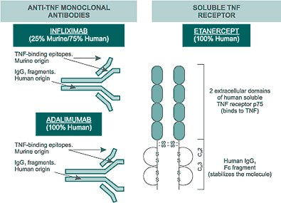
Fig 5.10 Two molecular designs. Left — monoclonal antibodies: infliximab (25% murine, 75% human — a chimera) and adalimumab (100% human). Right — a soluble receptor decoy: etanercept, two extracellular domains of human TNF receptor p75 fused to a human IgG₁ Fc, which stabilises the molecule and extends its half-life.دو طرح مولکولی. چپ — آنتیبادیهای مونوکلونال: اینفلیکسیماب (۲۵٪ موشی، ۷۵٪ انسانی — کایمر) و آدالیمومَب (۱۰۰٪ انسانی). راست — دیکوی گیرندهٔ محلول: اتانرسپت، دو دومین خارجسلولی گیرندهٔ TNFp75 انسانی که به FcIgG₁ انسانی جوش خورده و مولکول را پایدار و نیمهعمرش را طولانی میکند.
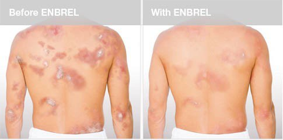
Fig 5.11 Plaque psoriasis before and during etanercept. The same drug is licensed for rheumatoid arthritis, psoriasis, psoriatic arthritis, ankylosing spondylitis and Crohn's disease — one cytokine, many diseases.پسوریازیس پلاکی پیش و حین اتانرسپت. همین دارو برای آرتریت روماتوئید، پسوریازیس، آرتریت پسوریاتیک، اسپوندیلیت آنکیلوزان و بیماری کرون مجوز دارد — یک سایتوکاین، بیماریهای بسیار.
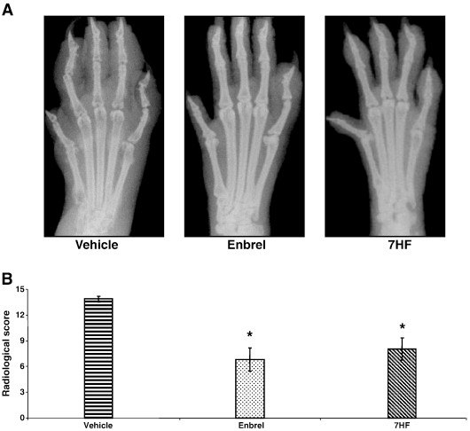
Fig 5.12 The harder endpoint: hand radiographs and radiological scores. Anti-TNF does not merely relieve symptoms — it slows structural joint destruction, which is why it changed the natural history of rheumatoid arthritis rather than just its comfort.نقطهٔ پایانی دشوارتر: رادیوگرافی دست و نمرهٔ رادیولوژیک. ضد TNF صرفاً علائم را تسکین نمیدهد — تخریب ساختاری مفصل را کند میکند، و به همین سبب سیر طبیعی آرتریت روماتوئید را تغییر داد، نه فقط راحتی بیمار را.
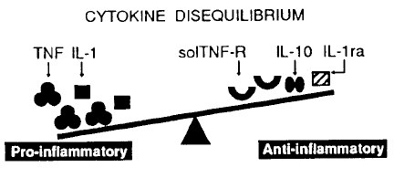
Fig 5.13Cytokine disequilibrium. On one side TNF and IL-1; on the other the body's own inhibitors — soluble TNF receptor, IL-10 and IL-1ra. Inflammatory disease is the seesaw tipping. Every anti-cytokine drug is an attempt to add weight to the right-hand pan.عدم تعادل سایتوکاینی. یک سو TNF و IL-1؛ سوی دیگر مهارکنندههای خود بدن — گیرندهٔ محلول TNF، IL-10 و IL-1ra. بیماری التهابی یعنی کجشدن این الاکلنگ. هر داروی ضدسایتوکاین، کوششی است برای افزودن وزن به کفهٔ راست.
Clinical Correlation — what you must check before an anti-TNFارتباط بالینی — پیش از ضد TNF چه باید بررسی کرد
TNF is required to maintain granulomas. Block it and a walled-off, dormant tuberculous focus can break open. Screening for latent tuberculosis before starting anti-TNF therapy is mandatory, and reactivation of TB is the signature adverse effect of the class. Hepatitis B reactivation and an increased risk of other intracellular infections follow the same logic. Once again the side-effect profile confirms the physiology: TNF's normal job is exactly what its blockade removes.TNF برای نگهداشتن گرانولومها لازم است. مسدودش کنید و کانون سلی خفته و دیوارهکشیده میتواند باز شود. غربالگری سل نهفته پیش از آغاز درمان ضد TNF الزامی است، و فعالشدن مجدد سل، عارضهٔ شاخص این گروه دارویی است. فعالشدن مجدد هپاتیت B و افزایش خطر سایر عفونتهای درونسلولی از همین منطق پیروی میکنند. باز هم نیمرخ عوارض، فیزیولوژی را تأیید میکند: کار طبیعی TNF دقیقاً همان است که مسدودکردنش برمیدارد.
Viruses steal the whole systemویروسها کل سامانه را میدزدند
Table 5.4 What a poxvirus genome spends its genes onجدول ۵.۴ — ژنوم پاکسویروس ژنهایش را خرج چه میکند
Class of stolen geneردهٔ ژن دزدیدهشده
Examples named on the slideنمونههای نامبرده در اسلاید
Mops the cytokine up before it reaches a real receptor. Exactly the design of etanercept — a soluble receptor used as a spongeسایتوکاین را پیش از رسیدن به گیرندهٔ واقعی جارو میکند. دقیقاً طرح اتانرسپت — گیرندهای محلول که همچون اسفنج بهکار میرود
Actively suppresses the host response. vIL-10 is a working copy of our own anti-inflammatory cytokine, used against usفعالانه پاسخ میزبان را سرکوب میکند.vIL-10 نسخهای کارآمد از سایتوکاین ضدالتهابی خودمان است که علیه ما بهکار میرود
Chemokine-binding proteinsپروتئینهای متصلشونده به کموکاین
vCKBP1 · vCKBP2vCKBP1 · vCKBP2
Stops leukocytes being recruited — no chemokine gradient, no infiltrateمانع فراخوانی لکوسیت میشود — بدون شیب کموکاینی، بدون ارتشاح
Diverts cell traffic, and in some cases lets the infected cell read host signals for its own benefitترافیک سلولی را منحرف میکند، و گاه میگذارد سلول آلوده پیامهای میزبان را به سود خود بخواند
Scale: a poxvirus genome is 130–300 kbp with about 200 open reading frames. A large fraction of those genes is spent on the list above. Herpesviruses do the sameمقیاس: ژنوم پاکسویروس ۱۳۰ تا ۳۰۰ کیلوجفتباز با حدود ۲۰۰ چارچوب خوانش باز است. بخش بزرگی از آن ژنها خرج فهرست بالا میشود. هرپسویروسها هم همین میکنند
Note the symmetry with our own drugsبه تقارنش با داروهای خودمان توجه کنید
Etanercept is a soluble TNF receptor fused to an Fc.CrmE is a soluble viral TNF receptor. They are the same invention. Poxviruses arrived at decoy-receptor therapy several million years before Feldmann and Maini did, and for the opposite purpose. When you meet a viral immune-evasion protein, ask what it is a copy of — the answer tells you which host molecule mattered enough to be worth stealing.اتانرسپت، گیرندهٔ محلول TNFی است که به یک Fc جوش خورده.CrmE گیرندهٔ محلول TNF ویروسی است. یک اختراعاند. پاکسویروسها چند میلیون سال پیش از فلدمن و مینی به درمان با گیرندهٔ دیکوی رسیدند، و برای هدفی معکوس. وقتی به پروتئین گریز ایمنیِ ویروسی برخوردید بپرسید کپیِ چیست — پاسخ میگوید کدام مولکول میزبان آنقدر مهم بوده که ارزش دزدیدن داشته است.